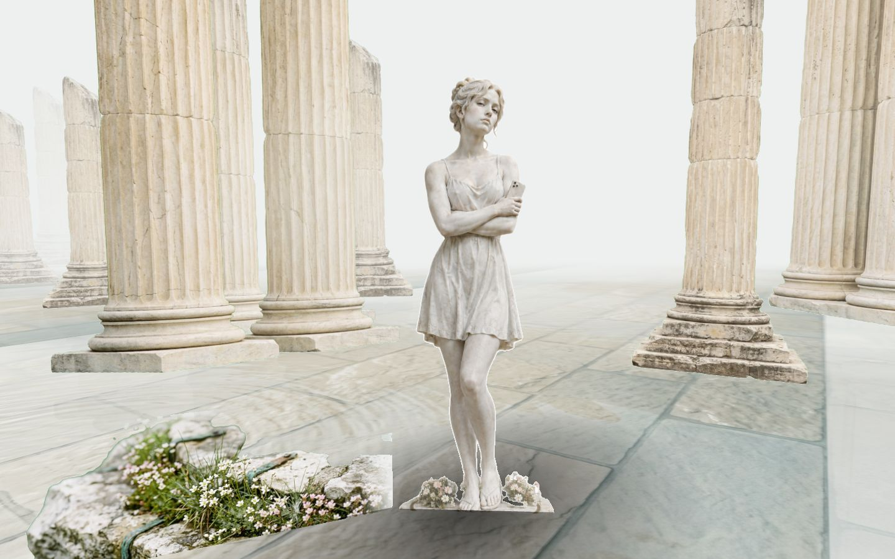
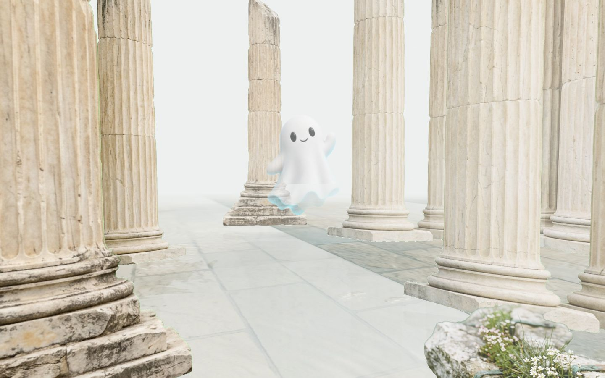
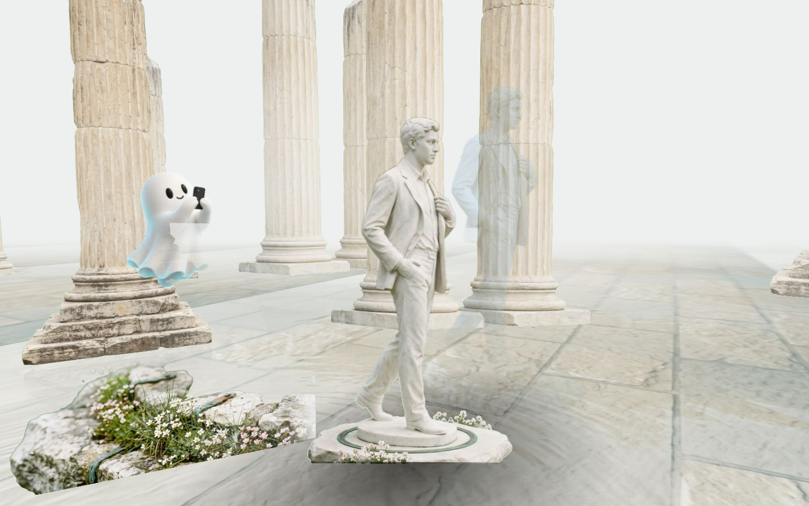
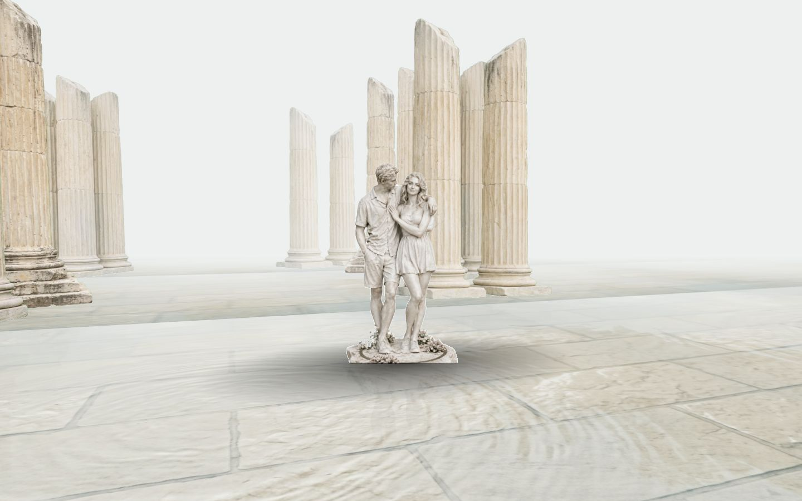

Poza floats a pose guide over the iPhone camera and talks you through the shot. The next one is the keeper.
There is a garden ahead. She is waiting at the first island. Scroll to walk.
Eleven frames. A bin in the corner, a chin in the shadow. She hands the phone back.
You had one job.
NextThat is Poza. In the app it floats a guide over the live camera and talks you through the shot while you aim. It is the only thing here that moves.
NextFor the one holding the phone: a faint figure shows where he should stand, and a voice says half a step left, lower it, chin down a touch. Then it says when you have it.
NextThe photo that looks directed, on the first try. Poza is an iPhone app, in development. Leave an email and you will hear when early access opens.
Poza floats a pose guide over the iPhone camera and talks you through the shot. The next one is the keeper.

Eleven frames. A bin in the corner, a chin in the shadow. She hands the phone back.
You had one job.

That is Poza. In the app it floats a guide over the live camera and talks you through the shot while you aim.

For the one holding the phone: a faint figure shows where he should stand, and a voice says half a step left, lower it, chin down a touch. Then it says when you have it.

The photo that looks directed, on the first try. Poza is an iPhone app, in development. Leave an email and you will hear when early access opens.